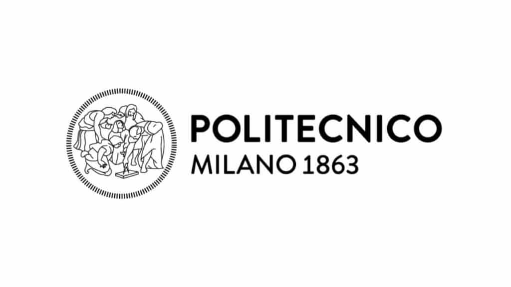

Weichen Zhang
About
Weichen Zhang is a PhD candidate in Architecture at the School of Architecture and Design, Harbin Institute of Technology, supervised by Prof. Cheng Sun. His research investigates embodied interaction for human–multi-robot collaborative construction, with a focus on robotic construction, human–robot interaction, computational design, and extended reality.
His work is informed by architectural education and research across China and Europe. He holds an MSc in Architecture and Urban Design from Politecnico di Milano, where he worked at INDEXLAB on XR-mediated human–robot collaboration and interactive robotic fabrication, after completing his Bachelor of Architecture at Harbin Institute of Technology. He develops software and experimental systems that connect spatial design workflows with robotic action, and studies how people direct, understand, and coordinate with construction robots.
Robotic construction · Human–robot interaction · Computational design · Extended reality
- PhD in ArchitectureHarbin Institute of TechnologySchool of Architecture and Design · Harbin, China

MSc in Architecture and Urban DesignPolitecnico di MilanoSchool of Architecture Urban Planning Construction Engineering · Milan, Italy- Bachelor of ArchitectureHarbin Institute of TechnologySchool of Architecture · Harbin, China